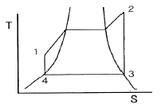
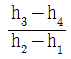
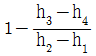
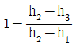
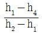
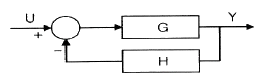
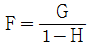
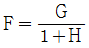
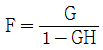
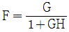

에너지관리산업기사 (2016-03-06 기출문제)
1과목: 열역학 및 연소관리
1. 기체연료 연소 장치 중 가스버너의 특징으로 틀린 것은?
- 공기비 제어가 불가능하다.
- 정확한 온도제어가 가능하다.
- 연소상태가 좋아 고부하 연소가 용이하다.
- 버너의 구조가 간단하고 보수가 용이하다.
(정답률: 89%)

2. 가솔린 기관의 이론 표준 사이클인 오토사이클(Otto cycle)의 4가지 기본 과정에 포함되지 않은 것은?
- 정압가열
- 단열팽창
- 단열압축
- 정적방열
(정답률: 68%)
3. 물질의 상 변화와 관계있는 열량을 무엇이라 하는가?
- 잠열
- 비열
- 현열
- 반응열
(정답률: 89%)
4. 안전밸브의 크기에 대한 선정원칙은?
- 증발량과 증기압력에 비례한다.
- 증발량과 증기압력에 반비례한다.
- 증발량에 반비례하고, 증기압력에 비례한다.
- 증발량에 비례하고, 증기압력에 반비례한다.
(정답률: 68%)
5. C중유 1kg을 연소시켰을 때 생성되는 수증기 양은? (단, C중유의 수소함량은 11%로 하고, 기타 수분은 없는 것으로 가정한다.)
- 0.52 Nm3/kg
- 0.75 Nm3/kg
- 1.00 Nm3/kg
- 1.23 Nm3/kg
(정답률: 48%)
6. 공기 1kg을 15℃로부터 80℃로 가열하여 체적이 0.8m3에서 0.95m3로 되는 과정에서의 엔트로피 변화량은? (단, 밀폐계로 가정하며, 공기의 정압비열은 1.004 kJ/kg·K 이며, 기체상수는 0.287 kJ/kg·K 이다.)
- 0.2 kJ/K
- 1.3 kJ/K
- 3.8 kJ/K
- 6.5 kJ/K
(정답률: 39%)
7. 어떤 계가 한 상태에서 다른 상태로 변할 때, 이 계의 엔트로피의 변화는?
- 항상 감소한다.
- 항상 증가한다.
- 항상 증가하거나 불변이다.
- 증가, 감소, 불변 모두 가능하다.
(정답률: 85%)
8. 다음 과정 중 등온과정에 가장 가까운 것으로 가정할 수 있는 것은?
- 공기가 500rpm으로 작동되는 압축기에서 압축되고 있다.
- 압축공기를 이용하여 공기압 이용 공구를 구동한다.
- 압축공기 탱크에서 공기가 작은 구멍을 통해 누설된다.
- 2단 공기 압축기에서 중간냉각기 없이 대기압에서 500 kPa 까지 압축한다.
(정답률: 77%)
9. 열역학 제2법칙에 대한 설명으로 옳은 것은?
- 음식으로 섭취한 화학에너지는 운동에너지로 변한다.
- 0℃의 물과 0℃의 얼음은 열적 평형상태를 이루고 있다.
- 증기 기관의 운동에너지는 연료로부터 나온 에너지이다.
- 효율이 100%인 열기관은 만들 수 없다.
(정답률: 83%)
10. 기름 5kg을 15℃에서 115℃까지 가열하는데 필요한 열량은? (단, 기름의 평균 비열은 0.65 kcal/kg·℃ 이다.)
- 325 kcal
- 422 kcal
- 510 kcal
- 525 kcal
(정답률: 63%)
11. 폴리트로픽 지수가 무한대(n = ∞)인 변화는?
- 정온(등온)변화
- 정적(등적)변화
- 정압(등압)변화
- 단열변화
(정답률: 82%)
12. 어떤 증기의 건도가 0 보다 크고 1 보다 작으면 어떤 상태의 증기인가?
- 포화수
- 습증기
- 포화증기
- 과열증기
(정답률: 80%)
13. 과열증기에 대한 설명으로 가장 적합한 것은?
- 보일러에서 처음 발생한 증기이다.
- 습포화증기의 압력과 온도를 높인 것이다.
- 건포화증기를 가열하여 온도를 높인 것이다.
- 액체의 증발이 끝난 상태로 수분이 전혀 함유되지 않는 증기이다.
(정답률: 85%)
14. 다음 랭킨사이클에서 1-2과정은 보일러 및 과열기에서의 열 흡수, 2-3은 터빈에서의 일, 3-4는 응축기에서의 열 방출, 4-은 펌프의 일을 표시할 때, 열효율을 나타내는 식은? (단, h1, h2, h3, h4 는 각 지점에서의 엔탈피를 나타낸다.)





(정답률: 77%)
15. 표준대기압하에서 메탄(CH4), 공기의 가연성 혼합기체를 완전 연소시킬 때 메탄 1kg을 연소시키기 위해서 필요한 공기량은? (단, 공기 중의 산소는 23.15 wt% 이다.)
- 4.4 kg
- 17.3 kg
- 21.1 kg
- 28.8 kg
(정답률: 57%)
16. 공기비(m)에 대한 설명으로 옳은 것은?
- 공기비는 이론공기량을 실제공기량으로 나눈 값이다.
- 어떠한 연료든 연료를 연소시킬 경우 이론공기량보다 더 적은 공기량으로 완전연소가 가능하다.
- 일반적으로 연료를 완전연소 시키기 위해 실제 공기량이 적을수록 좋으며 열효율도 증대된다.
- 실제 공기비는 연료의 종류에 따라 다르며, 연료와 공기의 접촉면적 비율이 작을수록 커진다.
(정답률: 57%)
17. 공급열량과 압축비가 일정한 경우에 다음 중 효율이 가장 좋은 것은?
- 오토사이클
- 디젤사이클
- 사바테사이클
- 브레이튼사이클
(정답률: 71%)
18. 증발잠열이 0 kcal/kg 이고, 액체와 기체의 구별이 없어지는 지점을 무엇이라고 하는가?
- 포화점
- 임계점
- 비등점
- 기화점
(정답률: 91%)
19. 탄소 72.0%, 수소 5.3%, 황 0.4%, 산소 8.9%, 질소 1.5%, 수분 0.9%, 회분 11.0% 의 조성을 갖는 석탄의 고위 발열량은?
- 4990 kcal/kg
- 5890 kcal/kg
- 6990 kcal/kg
- 7266 kcal/kg
(정답률: 39%)
20. 고열원 300℃와 저열원 30℃의 사이클로 작동되는 열기관의 최고 효율은?
- 0.47
- 0.52
- 1.38
- 2.13
(정답률: 50%)
2과목: 계측 및 에너지진단
21. 0℃ 에서의 저항이 100Ω인 저항온도계를 로 안에서 측정 시 저항시 200Ω이 되었다면, 이 로 안의 온도는? (단, 저항온도계수는 0.0⑤ 이다.)
- 100℃
- 150℃
- 200℃
- 250℃
(정답률: 54%)
22. 다음의 블록 선도에서 피드백제어의 전달함수를 구하면?





(정답률: 72%)
23. 보일러 5 마력의 상당증발량은?
- 55.65 kg/h
- 78.25 kg/h
- 86.45 kg/h
- 98.35 kg/h
(정답률: 83%)
24. 아르키메데스의 원리를 이용하여 측정하는 액면계는?
- 액압측정식 액면계
- 전극식 액면계
- 편위식 액면계
- 기포식 액면계
(정답률: 86%)
25. 탄성식 압력계가 아닌 것은?
- 부르돈관 압력계
- 벨로즈 압력계
- 다이어프램 압력계
- 경사관식 압력계
(정답률: 86%)
26. 보일러 연도에서 가스를 채취하여 분석할 때 분석계 입구에서 2차 필터로 주로 사용되는 것은?
- 아런덤
- 유리솜
- 소결금속
- 카보런덤
(정답률: 81%)
27. 다음 공업 계측기기 중 고온측정용으로 가장 적합한 온도계는?
- 유리 온도계
- 압력 온도계
- 방사 온도계
- 열전대 온도계
(정답률: 85%)
28. 지로코니아식 O2 측정기의 특징에 대한 설명 중 틀린 것은?
- 응답속도가 빠르다.
- 측정범위가 넓다.
- 설치장소 주위의 온도 변화에 영향이 적다.
- 온도 유지를 위한 전기로가 필요 없다.
(정답률: 69%)
29. 보일러의 점화, 운전, 소화를 자동적으로 행하는 장치에 관한 설명으로 틀린 것은?
- 긴급연료차단 밸브 : 버너의 연료 공급을 차단시키는 전자밸브
- 유량조절 밸브 : 버너에서의 분사량 조절
- 스택스위치 : 풍압이 낮아진 경우 연료의 차단신호를 송출
- 전자개폐기 : 연료 펌프, 송풍기 등의 가동·정지
(정답률: 81%)
30. 직각으로 굽힌 유리관의 한쪽을 수면 바로 밑에 넣고 다른 쪽은 연직으로 세워 수평 방향으로 설치하였다. 수면위로 상승된 높이가 13mm 일 때 유속은?
- 0.1 m/s
- 0.3 m/s
- 0.5 m/s
- 0.7 m/s
(정답률: 48%)
31. 다음 중 차압식 유량계가 아닌 것은?
- 벤투리 유량계
- 오리피스 유량계
- 피스톤형 유량계
- 플로우 노즐 유량계
(정답률: 70%)
32. 용적식 유량계의 특징에 대한 설명으로 틀린 것은?
- 맥동의 영향이 적다.
- 직관부는 필요 없으며, 압력손실이 크다.
- 유량계 전단에 스트레이너가 필요하다.
- 점도가 높은 경우에도 측정이 가능하다.
(정답률: 68%)
33. 증기보일러에서 부하율을 올바르게 설명한 것은?
- 최대연속증발량(kg/h)을 실제증발량(kg/h)으로 나눈 값의 백분율이다.
- 실제증발량(kg/h)을 상당증발량(kg/h)으로 나눈 값의 백분율이다.
- 실제증발량(kg/h)을 최대연속증발량(kg/h)으로 나눈 값의 백분율이다.
- 상당증발량(kg/h)을 실제증발량(kg/h)으로 나눈 값의 백분율이다.
(정답률: 63%)
34. 다음 중 패러데이(Faraday)법칙을 이용한 유량계는?
- 전자유량계
- 델타유량계
- 스와르미터
- 초음파유량계
(정답률: 78%)
35. 자동제어계에서 제어량의 성질에 의한 분류에 해당되지 않는 것은?
- 서보기구
- 다수변제어
- 프로세스제어
- 정치제어
(정답률: 63%)
36. 한 시간 동안 연도로 배기되는 가스량이 300kg, 배기가스 온도 240℃, 가스의 평균 비열이 0.32 kcal/kg·℃ 이고, 외기 온도가 –10℃ 일 때, 배기가스에 의한 손실열량은?
- 14100 kcal/h
- 24000 kcal/h
- 32500 kcal/h
- 38400 kcal/h
(정답률: 71%)
37. 보일러 자동제어의 장점으로 가장 거리가 먼 것은?
- 효율적인 운전으로 연료비가 절감된다.
- 보일러 설비의 수명이 길어진다.
- 보일러 운전을 안전하게 한다.
- 급수처리 비용이 증가한다.
(정답률: 89%)
38. 다음 화염검출기 중 가장 높은 온도에서 사용할 수 있는 것은?
- 프레임 로드
- 황화카드뮴 셀
- 광전관 검출기
- 자외선 검출기
(정답률: 78%)
39. 1 ppm 이란 용액 몇 kgf 의 용질 1mg 이 녹아 있는 경우인가?
- 1 kgf
- 10 kgf
- 100 kgf
- 1000 kgf
(정답률: 64%)
40. 서로 다른 금속의 열팽창계수 차이를 이용하여 온도를 측정하는 것은?
- 열전대 온도계
- 바이메탈 온도계
- 측온저항체 온도계
- 서미스터
(정답률: 74%)
3과목: 열설비구조 및 시공
41. 마그네시아를 원료로 하는 내화물이 수증기의 작용을 받아 Mg(OH)2을 생성하는데 이 때 큰 비중변화에 의한 체적변화를 일으켜 노벽에 균열이 발생하는 현상은?
- 슬래킹(Slaking)
- 스폴링(Spalling)
- 버스팅(Bursting)
- 해밍(Hamming)
(정답률: 63%)
42. 관류보일러의 특징으로 틀린 것은?
- 관(管)으로만 구성되어 기수드럼이 필요하지 않기 때문에 간단한 구조이다.
- 전열 면적당 보유수량이 많기 때문에 증기 발생까지의 시간이 많이 소요된다.
- 부하변동에 의해 압력변동이 생기기 쉽기 때문에 급수량 및 연료량의 자동제어가 장치가 필요하다.
- 충분히 수 처리된 급수를 사용하여야 한다.
(정답률: 72%)
43. 검사대상기기의 계속사용검사 중 산업통상자원부령으로 정하는 항목의 검사에 불합격한 경우 일정기간 내 그 검사에 합격할 것을 조건으로 계속 사용을 허용한다. 그 기간은 몇 개월 이내인가? (단, 철금속가열로는 제외한다.)
- 6개월
- 7개월
- 8개월
- 10개월
(정답률: 90%)
44. 보일러 검사를 받는 자에게는 그 검사의 종류에 따라 필요한 사항에 대한 조치를 하게 할 수 있다. 그 조치에 해당되지 않는 것은?
- 비파괴검사의 준비
- 수압시험의 준비
- 운전성능 측정의 준비
- 보온단열재의 열전도 시험준비
(정답률: 69%)
45. 열사용기자재 중 검사대상기기에 해당되는 것은?
- 태양열 집열기
- 구멍탄용 가스보일러
- 제2종 압력용기
- 축열식 전기보일러
(정답률: 73%)
46. 보일러 관석(scale)에 대한 설명 중 틀린 것은?
- 관석이 부착하면 열전도율이 상승한다.
- 수관 내에 관석이 부착하면 관수 순환을 방해한다.
- 관석이 부착하면 국부적인 과열로 산화, 팽창 파열의 원인이 된다.
- 관석의 주성분은 크게 나누어 황산칼슘, 규산칼슘, 탄산칼슘 등이 있다.
(정답률: 83%)
47. 수관보일러와 비교하여 원통보일러의 특징으로 틀린 것은?
- 형상에 비해서 전열면적이 적고, 열효율은 수관보일러보다 낮다.
- 전열면적당 수부의 크기는 수관보일러에 비해 크다.
- 구조가 간단하므로 취급이 쉽다.
- 구조상 고압용 및 대용량에 적합하다.
(정답률: 65%)
48. 다음 중 산성내화물의 주요 화학 성분은?
- SiO2
- MgO
- FeO
- SiC
(정답률: 80%)
49. 검사대상기기의 검사종류 중 제조검사에 해당되는 것은?
- 구조검사
- 개조검사
- 설치검사
- 계속사용검사
(정답률: 77%)
50. 산소를 로(瀘)속에 공급하여 불순물을 제거하고 강철을 제조하는 로(瀘)는?
- 큐폴라
- 반사로
- 전로
- 고로
(정답률: 72%)
51. 강판의 두께가 12mm 이고 리벳의 직경이 20mm 이며, 피치가 48mm 의 1줄 겹치기 리벳조인트가 있다. 이 강판의 효율은?
- 25.9%
- 41.7%
- 58.3%
- 75.8%
(정답률: 52%)
52. 단열벽돌을 요로에 사용 시 특징에 대한 설명으로 틀린 것은?
- 축열 손실이 적어진다.
- 전열 손실이 적어진다.
- 노내 온도가 균일해지고, 내화물의 배면에 사용하면 내화물의 내구력이 커진다.
- 효과적인 면도 적지 않으나 가격이 비싸므로 경제적인 이익은 없다.
(정답률: 88%)
53. 매 초당 20L의 물을 송출시킬 수 있는 급수 펌프에서 양정이 7.5m, 펌프효율이 75% 일 때, 펌프의 소요 동력은?
- 4.34 kW
- 2.67 kW
- 1.96 kW
- 0.27 kW
(정답률: 49%)
54. 증기배관에서 감압밸브 설치 시 주의점에 대한 설명으로 가장 거리가 먼 것은?
- 감압밸브는 부하설비에 가깝게 설치한다.
- 감압밸브 앞에는 스트레이너를 설치하여야 한다.
- 감압밸브 1차측의 관 축소시 동심레듀서를 설치하여야 한다.
- 감압밸브 앞에는 기수분리기나 트랩을 설치하여 응축수를 제거한다.
(정답률: 71%)
55. 큐폴라(Cupola)의 다른 명칭은?
- 용광로
- 반사로
- 용선로
- 평로
(정답률: 79%)
56. 다음 중 박스 트랩(box trap) 중 하나로 주로 아파트 및 건물의 발코니 등의 바닥 배수에 사용하여 상층의 배수 침투 및 악취 분출 방지역할을 하는 트랩은?
- 벨 트랩
- S 트랩
- 관 트랩
- 그리스 트랩
(정답률: 76%)
57. 오르자트(prsat) 가스분석기로 측정할 수 있는 성분이 아닌 것은?
- 산소(O2)
- 일산화탄소(CO)
- 이산화탄소(CO2)
- 수소(H2)
(정답률: 72%)
58. 큐폴라에 대한 설명으로 틀린 것은?
- 규격은 매 시간당 용해할 수 있는 중량(ton)으로 표시한다.
- 코크스 속의 탄소, 인, 황 등의 불순물이 들어가 용탕의 질이 저하된다.
- 열효율이 좋고 용해시간이 빠르다.
- Al합금이나 가단주철 및 칠드 롤러(chilled roller)와 같은 대형 주물제조에 사용된다.
(정답률: 76%)
59. 어느 대향류 열교환기에서 가열유체는 80℃로 들어가서 30℃로 나오고 수열유체는 20℃로 들어가서 30℃로 나온다. 이 열교환기의 대수 평균온도차는?
- 25℃
- 30℃
- 35℃
- 40℃
(정답률: 52%)
60. 다음 중 수관식 보일러에 속하는 것은?
- 노통보일러
- 기관차형보일러
- 바브콕보일러
- 황연관식보일러
(정답률: 74%)
4과목: 열설비취급 및 안전관리
61. 온수보일러에서 물의 온도가 393K(120℃)를 초과하는 온수보일러에 안전장치로 설치하는 것은?
- 안전밸브
- 압력계
- 방출밸브
- 수면계
(정답률: 81%)
62. 보일러에서 압력차단(제한)스위치의 작동압력은 어떻게 조정하여야 하는가?
- 사용압력과 같게 조정한다.
- 안전밸브 작동압력과 같게 조정한다.
- 안전밸브 작동압력보다 약간 낮게 조정한다.
- 안전밸브 작동압력보다 약간 높게 조정한다.
(정답률: 85%)
63. 에너지이용합리화법에 따른 한국에너지공단의 사업이 아닌 것은?
- 열사용 기자재의 안전관리
- 도시가스 기술의 개발 및 도입
- 신에너지 및 재생에너지 개발사업의 촉진
- 에너지이용 합리화 및 이를 통한 온실가스의 배출을 줄이기 위한 사업과 국제협력
(정답률: 70%)
64. 강철제 보일러의 최고 사용압력이 1.6 MPa일 때 수압시험 압력은 최고 사용압력의 몇 배로 계산하는가?
- 최고 사용압력의 1.3배
- 최고 사용압력의 1.5배
- 최고 사용압력의 2배
- 최고 사용압력의 3배
(정답률: 72%)
65. 에너지이용합리화법에 따라 다음 중 효율관리 기자재가 아닌 것은?
- 자동차
- 컴퓨터
- 조명기기
- 전기세탁기
(정답률: 79%)
66. 일반적으로 보일러를 정지시키기 위한 순서로 옳은 것은?
- 연료차단 → 공기차단 → 주증기밸브 폐쇄 → 댐퍼 폐쇄
- 연료차단 → 공기차단 → 주증기밸브 폐쇄 → 댐퍼 개방
- 공기차단 → 연료차단 → 주증기밸브 폐쇄 → 댐퍼 폐쇄
- 주증기밸브 폐쇄 → 공기차단 → 연료차단 → 댐퍼 개방
(정답률: 73%)
67. 에너지법에 의하면 에너지 수급에 차질이 발생할 경우 대비하여 비상시 에너지수급계획을 수립하여야 하는 자는?
- 대통령
- 국방부장관
- 산업통상자원부장관
- 한국에너지공단이사장
(정답률: 75%)
68. 다음 석탄재의 조성 중 많을수록 석탄재의 융점을 낮아지게 하는 성분이 아닌 것은?
- Fe2O3
- CaO
- SiO2
- MgO
(정답률: 70%)
69. 다음 소형 온수보일러 중 에너지이용합리화법에 의한 검사대상기기는?
- 전기 및 유류겸용 소형온수보일러
- 유류를 연료로 쓰는 가정용 소형온수보일러
- 도시가스 사용량이 20만 kcal//h 이하인 소형온수보일러
- 가스 사용량이 17 kg/h를 초과하는 소형 온수보일러
(정답률: 88%)
70. 에너지이용합리화법에 의한 에너지 사용시설이 아닌 것은?
- 발전소
- 에너지를 사용하는 공장
- 에너지를 사용하는 사업장
- 경유 등을 사용하는 가정
(정답률: 82%)
71. 증기보일러 가동 중 과부하 상태가 될 때 나타나는 현상으로 틀린 것은?
- 프라이밍(priming)발생이 적어진다.
- 단위연료당 증발량이 작아진다.
- 전열면 증발률은 증가한다.
- 보일러 효율이 떨어진다.
(정답률: 73%)
72. 보일러 가동 중 연료소비의 과대 원인으로 가장 거리가 먼 것은?
- 연료의 발열량이 낮을 경우
- 연료의 예열온도가 높을 경우
- 연료 내 물이나 협잡물이 포함된 경우
- 연소용 공기가 부족한 경우
(정답률: 69%)
73. 감압밸브 설치 시 배관시공법에 대한 설명으로 틀린 것은?
- 감압밸브는 가급적 사용처에 근접시공 한다.
- 감압밸브 앞에는 여과기를 설치해야 한다.
- 감압 후 배관은 1차측 보다 확관되어야 한다.
- 감압장치의 안전을 위하여 밸브 앞에 안전밸브를 설치한다.
(정답률: 62%)
74. 신설 보일러의 가동 전 준비사항에 대한 설명으로 틀린 것은?
- 공구나 기타 물건이 동체 내부에 남아 있는지 반드시 확인한다.
- 기수분리기나 부속품의 부착상태를 확인한다.
- 신설 보일러에 대해서는 가급적 가열건조를 시키지 않고 자연건조(1주 이상)를 시킨다.
- 제작 시 내부에 부착한 페인트, 유지, 녹 등을 제거하기 위해 내면을 소다 끓이기 등을 통하여 제거한다.
(정답률: 82%)
75. 보일러설비 계획 시 연소장치의 버너를 선정할 때 검토해야 할 사항으로 가장 거리가 먼 것은?
- 연료의 종류
- 안전밸브 여부
- 유량조절 및 공기조절
- 연소실의 분위기(압력, 온도조절)
(정답률: 67%)
76. 에너지관리사에 대한 교육을 실시하는 기관은?
- 시·도
- 한국에너지공단
- 안전보건공단
- 한국산업인력공단
(정답률: 83%)
77. 보일러에서 압력계에 연결하는 증기관(최고 사용 압력에 견디는 것)을 강관을 하는 경우 안지름은 최소 몇 mm 이상으로 하여야 하는가?
- 6.5 mm
- 12.7 mm
- 15.6 mm
- 17.5 mm
(정답률: 85%)
78. 보일러에서 저수위로 인한 사고의 원인으로 가장 거리가 먼 것은?
- 저수위 제어장치의 고장
- 보일러 급수장치의 고장
- 증기 발생량의 부족
- 분출장치의 누수
(정답률: 68%)
79. pH가 높으면 보일러 수중의 경도 성분인 ( ① ), ( ② ) 등의 화하물의 용해도가 감소되기 때문에 스케일 부착이 어렵게 된다. ①, ②에 들어갈 적당한 용어는?
- ① : 망간, ② : 나트륨
- ① : 인산, ② : 나트륨
- ① : 탄닌, ② : 나트륨
- ① : 칼슘, ② : 마그네슘
(정답률: 76%)
80. 압력 0.1 kg/cm2 의 증기를 이용하여 난방을 하는 경우 방열기 내의 증기 응축량은? (단, 0.1 kg/cm2 에서의 증발잠열은 538 kcal/kg 이다.)
- 13.5 kg/m2·h
- 12.1 kg/m2·h
- 1.35 kg/m2·h
- 1.21 kg/m2·h
(정답률: 36%)